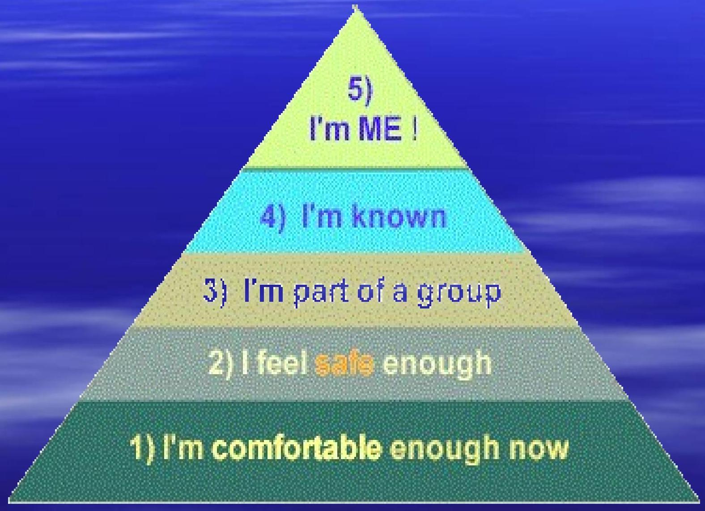

Human Needs
Objectives:
Effectively identify the needs of the patient through the use of Maslow's hierarchy of needs
- How needs are met.
- Ways to meet the needs of the patient.
Essential Questions:
- How is communication affected when the needs of the patient are not met?
- How can you meet the needs of the patient when they are in the hospital?
HUMAN NEEDS
- Needs motivate a person to act or behave in certain ways
- Needs must be met in order to live fulfilling life
Mesjow's rlierenchy of Needs

Physiological (needs of the body)
- Required for life
- Oxygen
- Food
- Water
- Elimination of waste
- Protection from extreme temperature
Sleep
- Sensory and motor stimulation
Safety and Security
- Need to feel secure in environment
- Free from anxiety and fear
Love and Affection
- Need for friendship, social acceptance, love
- Sexuality
Esteem
- Feeling important and worthwhile
Self-Actualization
- All other needs have been met
- Full potential explored & realized
Meeting The Need
Direct:
- Have realistic goals
- Work hard
- Cooperate with others
Indirect:
- Relieves tension/frustration from unmet needs
- Reduces the particular need through defense mechanisms
Defense Mechanisms
- Rationalization: using a logical reason or socially acceptable explanation for a behavior that makes a behavior seem appropriate
- Projection: attributing one's own undesirable qualities to another person
- Compensation: redirecting of goals
- Displacement: redirecting an emotion or behavior from original person or object to another person or object